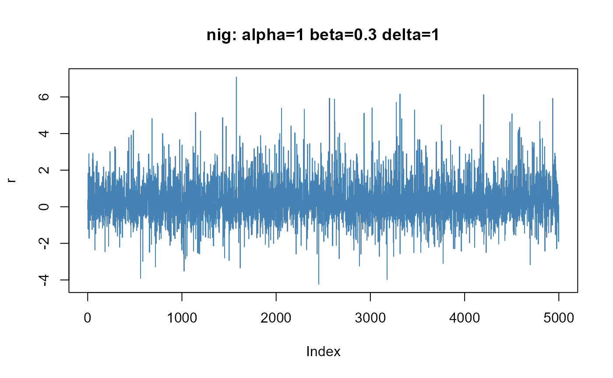

Normal Inverse Gaussian Distribution
dist-nig.RdDensity, distribution function, quantile function and random generation for the normal inverse Gaussian distribution.
Usage
dnig(x, alpha = 1, beta = 0, delta = 1, mu = 0, log = FALSE)
pnig(q, alpha = 1, beta = 0, delta = 1, mu = 0)
qnig(p, alpha = 1, beta = 0, delta = 1, mu = 0)
rnig(n, alpha = 1, beta = 0, delta = 1, mu = 0)Arguments
- x,q
a numeric vector of quantiles.
- p
a numeric vector of probabilities.
- n
number of observations.
- alpha
shape parameter.
- beta
skewness parameter
beta,abs(beta)is in the range(0, alpha).- delta
scale parameter, must be zero or positive.
- mu
location parameter, by default 0.
- log
a logical flag by default
FALSE. Should labels and a main title be drawn to the plot?
Details
dnig gives the density.
pnig gives the distribution function.
qnig gives the quantile function, and
rnig generates random deviates.
The parameters alpha, beta, delta, mu are in the first
parameterization of the distribution.
The random deviates are calculated with the method described by Raible (2000).
References
Atkinson, A.C. (1982); The simulation of generalized inverse Gaussian and hyperbolic random variables, SIAM J. Sci. Stat. Comput. 3, 502–515.
Barndorff-Nielsen O. (1977); Exponentially decreasing distributions for the logarithm of particle size, Proc. Roy. Soc. Lond., A353, 401–419.
Barndorff-Nielsen O., Blaesild, P. (1983); Hyperbolic distributions. In Encyclopedia of Statistical Sciences, Eds., Johnson N.L., Kotz S. and Read C.B., Vol. 3, pp. 700–707. New York: Wiley.
Raible S. (2000); Levy Processes in Finance: Theory, Numerics and Empirical Facts, PhD Thesis, University of Freiburg, Germany, 161 pages.
Examples
## nig -
set.seed(1953)
r = rnig(5000, alpha = 1, beta = 0.3, delta = 1)
plot(r, type = "l", col = "steelblue",
main = "nig: alpha=1 beta=0.3 delta=1")

## nig -
# Plot empirical density and compare with true density:
hist(r, n = 25, probability = TRUE, border = "white", col = "steelblue")
x = seq(-5, 5, 0.25)
lines(x, dnig(x, alpha = 1, beta = 0.3, delta = 1))
## nig -
# Plot df and compare with true df:
plot(sort(r), (1:5000/5000), main = "Probability", col = "steelblue")
lines(x, pnig(x, alpha = 1, beta = 0.3, delta = 1))
 ## nig -
# Compute Quantiles:
qnig(pnig(seq(-5, 5, 1), alpha = 1, beta = 0.3, delta = 1),
alpha = 1, beta = 0.3, delta = 1)
#> [1] -5.000001e+00 -4.000000e+00 -3.000006e+00 -1.999996e+00 -1.000010e+00
#> [6] -8.504243e-06 1.000003e+00 1.999972e+00 3.000000e+00 3.999998e+00
#> [11] 4.999976e+00
## nig -
# Compute Quantiles:
qnig(pnig(seq(-5, 5, 1), alpha = 1, beta = 0.3, delta = 1),
alpha = 1, beta = 0.3, delta = 1)
#> [1] -5.000001e+00 -4.000000e+00 -3.000006e+00 -1.999996e+00 -1.000010e+00
#> [6] -8.504243e-06 1.000003e+00 1.999972e+00 3.000000e+00 3.999998e+00
#> [11] 4.999976e+00